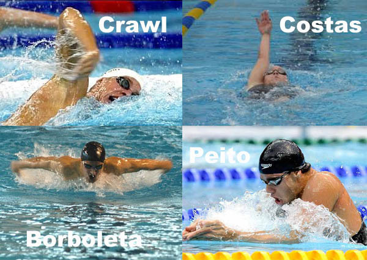

Natação:
A natação é uma prática corporal realizada na água por meio de quatro estilos de nado: Crawl, Peito, Costas e Borboleta.
A natação é compreendida por especialistas em saúde como sendo uma das atividades mais completas e benéficas para a saúde.
Aumenta a capacidade pulmonar, regula os batimentos cardíacos e a pressão arterial de seus praticantes.

A natação é praticada desde muitos anos antes de Cristo, isso é revelado por pinturas rupestres e relatos que remontam uma antiga relação dos humanos com a atividade.
A capacidade de nadar possibilitou avanços em questões relacionadas à sobrevivência e desenvolvimento humano.
Como esporte, a natação aparece em competições desde meados do século XIX.
Está presente também desde a primeira Olimpíada da era moderna em 1896

Foto de Nandaores na primeira Olimpiada da era moderna em 1986
Regras da Natação nas Olimpiadas e no Triathlon:
-
Dimensões da Piscina:
Existe um padrão de tamanho e profundidade estabelecido. A natação deve ser praticada em uma piscina denominada olímpica, que deve ter uma área de 50×25 metros e 3 metros de profundidade.
-
Espaço Ocupado
A piscina é dividida em 8 partes iguais quando a competição for na modalidade chamada natação pura. Cada competidor deve obedecer a esse limite e não ultrapassar as barreiras sinalizadas pelas raias.
-
Regras do Crawl:
As provas devem ser realizadas, obedecendo aos padrões de 50m, 100m, 200m, 400m, 800m, 1500m ou revezamento.
-
Regras do Nado de Costas:
A largada deve ser feita de dentro da água. Há provas de 100m e 200m.
No movimento da virada, os competidores devem bater as duas mãos na parede.
-
Regras do Nado Borboleta:
Na virada e na chegada, o toque deve ser efetuado com as duas mãos simultaneamente, acima, abaixo ou no nível da superfície da água. O nadador pode estar submerso até uma distância 15 metros após a partida e após cada virada.
-
Largada:
Independente do estilo de nado, é proibido queimar largada. Isso quer dizer que o competidor deve saltar no momento do sinal para não ser desclassificado.
Tecnicas de Natação:
-
Crawl:
Para executá-lo, você deve se posicionar com a parte frontal do seu corpo voltada para o fundo da piscina.
-
Costas:
Com abdômen para fora da água, o movimento deve ser feito por meio do revezamento dos braços que rotacionam na água e promovem o impulso.
-
Peito:
Deve ser realizado com o corpo e os braços estendidos e as palmas das mãos voltadas para fora. O rosto deve permanecer dentro da água.
-
Brboleta:
A barriga deve estar voltada para o fundo da piscina, as pernas movimentam-se em ondulações e devem estar juntas e alongadas.
Os braços são trazidos para frente do corpo simultaneamente, a respiração pode ser feita a cada duas ou cinco braçadas

Informações Adicionais:
A movimentação do corpo na água desenvolve capacidades físicas como o condicionamento cardiorrespiratório, coordenação motora e resistência muscular.
O movimento harmônico do corpo na água possibilita que diferentes e vários músculos, bem como as articulações, sejam constantemente trabalhados.
A natação é uma das práticas corporais mais completas quanto ao desenvolvimento de capacidades físicas.
Beneficios:
-
Melhora de habilidades físicas, como a força e flexibilidade musculares.
-
Melhora da circulação sanguínea.
-
Aprimoramento da coordenação motora
Curiosidades da Natação:
-
Na primeira edição dos jogos olímpicos, em Atenas, o primeiro campeão olímpico da natação foi o húngaro Alfréd Hajós.
-
O americano Michael Phelps foi o maior vencedor de natação em uma única olimpíada, ele venceu todas as provas da disputa.
-
Os soldados gregos e romanos tinham a natação como treinamento e preparação para as batalhas.